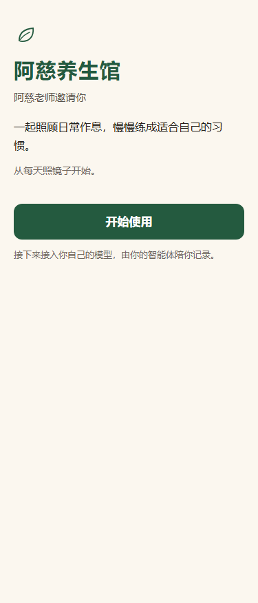
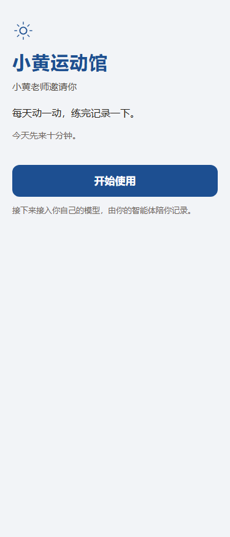
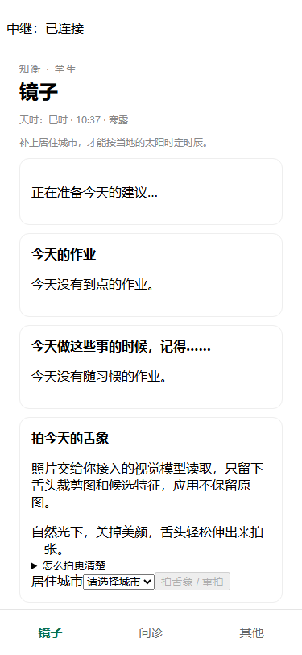
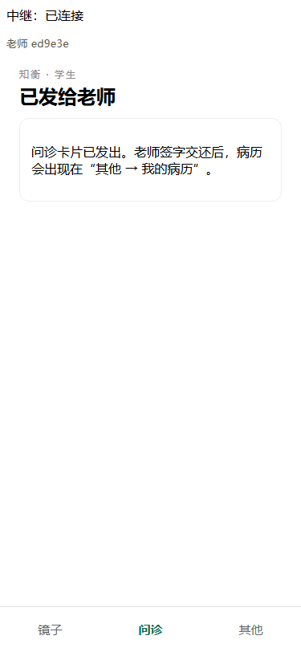
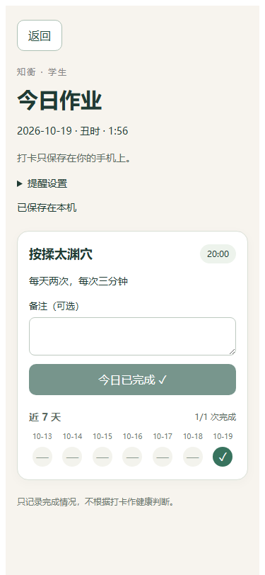

第一部分
知衡把您的“馆”搬到学生的手机上。学生每天在家照镜子、按您给的方案坚持；不舒服时，把情况整理好发给您。您看过、改过、亲手签字，再交还给学生。
它不是一个大平台，也不是网店。每位老师有自己的馆，名字、颜色、介绍都由您定；学生看到的是“您的馆”，不是别人的。
每个人（老师和学生）手机上都有一个自己的小助手，也就是“智能体”。学生的助手陪学生看自己、记自己、坚持下去；您的助手替您起草病历、整理账目、打理门面。助手只起草，决定永远是您做。
| 平时的难处 | 知衡怎么帮 |
|---|---|
| 学生知道该怎么做，就是坚持不下来 | 作业挂在学生已有的习惯上（比如“刷完牙按揉太渊穴”），到点提醒，打卡后看得到连续几天。 |
| 学生远程描述不清，问一句答一句 | 学生的助手按您的问诊模板先追问一遍，把“哪里不舒服、多久了、吃过什么药”整理成一张卡片，学生核对后才发给您。 |
| 照片看不清，或者拍进了半张脸 | 舌象照片当场处理：只留舌头那一块，加一张示意图和候选特征，看不准的标“不确定”。原图不保存、不发送。 |
| 写病历、开作业占时间 | 您的助手先起一份草稿，您改哪里都行，确认后亲手签字发出。草稿学得越来越像您。 |
| 收费、记账琐碎 | 学生在社区外付给您钱后，您对助手说一句“收到小王 100，送 20”，核对后确认入账；学生在自己手机上看得到余额。 |
| 一家老小都要照顾 | 家里的管理人可以替父母、孩子开子账户，代他们问诊；一家一本账。 |
同一套系统，换一份设置，就是不同的馆。下面是两个示例：一位养生老师、一位运动老师。


您可以自己改：馆名、称呼、小标志、配色、一段短介绍、一句欢迎语。直接点着改也行，对助手说一句“馆名改成××，用蓝色”也行。改之前能先看到学生那边的样子，满意了点“用这个样子”才生效，随时能恢复上一版。



| 页面 | 做什么 |
|---|---|
| 今天 | 看今天有哪些学生发来问诊、哪些在等您。 |
| 远程 | 打开学生的问诊，看助手起的病历草稿；舌象左边是裁剪图、右边是示意图，看不准的您逐项改。改完亲手签字发出，病历和作业就到了学生手机上。签字时可以顺手点一下“和上次比：改善 / 持平 / 变差 / 说不准”，不点也能签。 |
| 面诊 | 学生当面来时，直接在这里写病历、签字。 |
| 管理 | 邀请学生、说一句话记账、改门面、设“记录保留多久”（默认 90 天，可设 30 天到 3 年）。 |
第二部分
这一部分写给帮老师安装的技术人员。系统是开源的，代码在 GitHub 公开仓库 Jordani-Ho/Aster-Ai，部署文件在 deploy/home/。
| 部分 | 做什么 |
|---|---|
| 手机网页应用（web） | 老师和学生打开的就是它，可“添加到主屏幕”像 App 一样用。 |
| 中继（relay） | 在老师和学生的手机之间传消息（Nostr 协议，消息端到端加密，中继看不到内容）。 |
| 模型网关（gateway） | 推送提醒；使用者自己的模型调用失败时做后备。 |
| 对外入口 | 让手机从外网访问上面两个地址：路线 A 用隧道，路线 B 用域名加反向代理。 |
全部用 Docker 跑。数据只在部署机器的 deploy/home/data/ 里，不进仓库。
适合先试用。电脑要一直开着。
deploy/home/：
cp .env.example .env ./quick-start.sh脚本最后一行打印出手机可以直接打开的网址。
./verify.sh，六项都应 PASS。web:8080（应用）和 relay:8080（中继，WebSocket）；或者直接走路线 B。适合长期使用：全天在线、网址固定。需要一台 Linux 云服务器（2 核 4 GB 内存够用）和一个域名。
app.您的域名（应用）和 relay.您的域名（中继）。.env 里填：
APP_DOMAIN=app.您的域名 RELAY_DOMAIN=relay.您的域名 VAPID_SUBJECT=mailto:您的邮箱
./setup.sh 生成配置，再启动三个服务：
docker compose up -d --build relay gateway web
app.您的域名 {
reverse_proxy web:8080
}
relay.您的域名 {
reverse_proxy relay:8080
}
服务器只需对外开 80 和 443 端口。./verify.sh。cat deploy/home/data/teacher-setup-code.txt，只交给老师本人。docker compose down（路线 A 加 --profile quick）。docker compose build --no-cache relay gateway web，再启动。.env、data/ 和登记口令都不要外传、不要提交到任何仓库。先运行 ./verify.sh，看哪一项没过。把那一行的输出发给发起人，我们一起看。